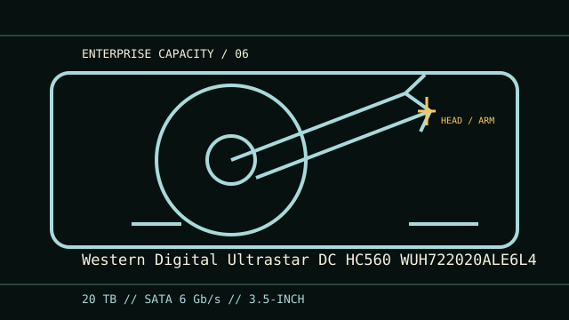

[ IDENTIFIED HDD // MODEL-SPECIFIC RECORD ]
Western Digital Ultrastar DC HC560 WUH722020ALE6L4
20 TB; 3.5-inch; SATA 6 Gb/s. This model-specific record summarizes identification, sector format, enterprise workload fit and host compatibility. Similar family names or suffixes are not interchangeable; check the nameplate and cited documentation.

IDENTIFICATION: Record the complete model/suffix, firmware and serial information from the label. Confirm the exact SKU and manual before procurement, configuration, or data recovery; interface or capacity alone does not establish compatibility.
Recorded specifications
| Exact model | Western Digital Ultrastar DC HC560 WUH722020ALE6L4 |
|---|---|
| Capacity | 20 TB decimal (manufacturer-rated) |
| Form factor | 3.5-inch, standard enterprise drive bay; check chassis clearance, carrier, mounting and cooling. |
| Interface | SATA 6 Gb/s; backward negotiation and host features depend on the controller. |
| Sector format | 512e (512-byte logical sectors on 4,096-byte physical sectors); the HC560 documentation lists sector-format variations by SKU—match exact suffix and host settings. |
| Recording technology | CMR/ePMR; helium-sealed; verify precise feature set against suffix and revision. |
| Workload compatibility | 550 TB/year workload rating in the manufacturer family data sheet; suitable for supported enterprise server/storage workloads within this limit. |
| Compatibility boundary | Requires a SATA-capable host/backplane and power connection. Confirm support for drives over 2 TB, GPT/OS/RAID capacity handling, sector mode, firmware, airflow and vibration environment; do not treat physical connector fit as approval for every array. |
Workload and integration notes
- Use with a SATA 6 Gb/s controller or a documented SATA-compatible backplane. A SAS connector/backplane is not automatically compatible; verify SATA device support for the specific controller, expander and enclosure.
- The listed annual workload is a drive-family rating, not a guarantee that a RAID rebuild, vibration environment, temperature or write pattern is suitable. Confirm system vendor qualification, RAID firmware behavior, power-on limits and cooling.
- Provision the full capacity with a GPT-aware operating system and a controller/array that supports this drive size. Match logical sector presentation across operating system, HBA, RAID metadata and backup tools before initializing.
- For data-bearing media, avoid writes, formatting, filesystem repair, repeated power cycles and stress tests if faults are present. Preserve label, firmware, host and acquisition details; obtain specialist advice before opening a failed drive.
Sources
- Ultrastar DC HC560 SATA 512e manufacturer product manualModel-family engineering and interface reference; confirm this exact model suffix and revision against the drive label.
- WD Ultrastar DC HC560 data sheetManufacturer family/product specification reference for capacity, interface, workload and installation context; use the exact model row where provided.
Specifications are included only as applicable to the named model and cited product-family documents. Verify exact label, sector mode and host qualification before use.